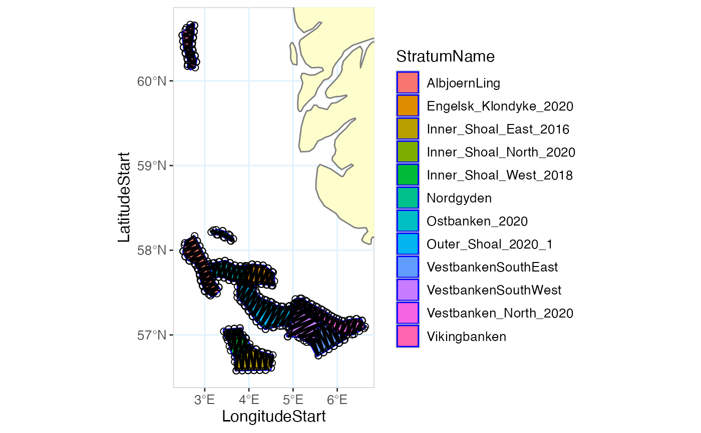

Plot a transect design.
PlotTransectDesign(
TransectDesignData,
UseDefaultTrackSettings = TRUE,
TrackColor = character(),
TrackLineWidth = numeric(),
TrackPointColor = character(),
TrackPointSize = numeric(),
TrackPointShape = numeric(),
ShowStratumPolygon = FALSE,
StratumPolygon,
UseDefaultStratumPolygonSettings = TRUE,
StratumPolygonColor = character(),
StratumPolygonBorderColor = character(),
StratumPolygonBorderLineWidth = numeric(),
ShowMap = TRUE,
UseDefaultMapSettings = TRUE,
LandColor = character(),
BorderColor = character(),
OceanColor = character(),
GridColor = character(),
ShowStations = FALSE,
UseDefaultStationSettings = TRUE,
StationsAlongTransectDesignData,
StationPointColor = character(),
StationPointSize = numeric(),
StationPointShape = numeric(),
UseDefaultAspectSettings = TRUE,
Zoom = numeric(),
LongitudeMin = numeric(),
LongitudeMax = numeric(),
LatitudeMin = numeric(),
LatitudeMax = numeric(),
LongitudeCenter = numeric(),
LatitudeCenter = numeric(),
UseDefaultLabelSettings = TRUE,
Title = character(),
AxisTitleSize = numeric(),
AxisTickSize = numeric(),
LegendTitleSize = numeric(),
LegendTextSize = numeric(),
UseDefaultFileSettings = TRUE,
Format = character(),
Width = numeric(),
Height = numeric(),
DotsPerInch = numeric()
)The TransectDesignData data.
Logical: If TRUE (default) use the default track settings of the plotting function. Setting this to FALSE will show all track options of the plotting function in the StoX GUI.
Character: The color to use for the vessel track, defaulted to "black".
Numeric: The width of the track, defaulted to 1.
Character: The colors to use when plotting the data points. The colors scale can be given either as vector of colors comprising equally spaced colors of the color scale, or as the name of a color scale function with the first argument being the number of colors. The default is the combined.color. Other options for color scale function are "rainbow", "hcl.colors", "heat.colors", "terrain.colors", "topo.colors" or "cm.colors".
Numeric: The size of the points.
The shape of the points, as defined for the argument pch in points.
Logical: If TRUE include the stratumPolygon. in the plot.
The StratumPolygon process data.
Logical: If TRUE (default) use the default settings for plotting the StratumPolygon. Setting this to FALSE will show all Stratum plotting options of the plotting function in the StoX GUI.
Character: The color palette to use for the strata. The default ("hue") is the default HUE color used by ggplot2. See the Palettes section in scale_fill_brewer for a list of options (both Diverging, Qualitative and Sequential color palettes are possible).
Character: The single color to use for the polygon borders.
Numeric: The line width of the polygon borders.
Logical: If TRUE include the map in the plot.
Logical: If TRUE (default) use the default settings of the map, specifically LandColor, BorderColor, OceanColor and GridColor. Setting this to FALSE will show all map options of the plotting function in the StoX GUI.
Character: The color to use for the land, defaulted to the color used for land in the StoX GUI map (yellow color, rgb(253, 254, 204, maxColorValue = 255)).
Character: The color to use for the borders on land, defaulted to "grey50".
Character: The color to use for the (ocean) background, defaulted to "white", as in the StoX GUI map.
Character: The color to use for the longitude/latitude grid lines, defaulted to the color used for the longitude/latitude grid in the StoX GUI map (blue color, rgb(223, 242, 255, maxColorValue = 255).
Logical: If TRUE include stations (along transects) in the plot.
Logical: If TRUE (default) use the default station settings of the plotting function. Setting this to FALSE will show all station options of the plotting function in the StoX GUI.
The StationsAlongTransectDesignData data.
Character: The color to use for the station points, defaulted to "black".
Numeric: The size of the station points.
The shape of the station points, as defined for the argument pch in points.
Logical: If TRUE (default) use the default aspect settings of the plot, specifically Zoom, LongitudeMin, LongitudeMax, LatitudeMin, LatitudeMax, LongitudeCenter and LatitudeCenter. Setting this to FALSE will show all aspect options of the plotting function in the StoX GUI.
Numeric: The zoom of the plot, defaulted to 1, which uses the range of the data as the plot limits. Higher values zooms out and lower values zooms in.
Numeric: The minimum longitude limit of the plot, overriding the value derived from Zoom.
Numeric: The maximum longitude limit of the plot, overriding the value derived from Zoom.
Numeric: The minimum latitude limit of the plot, overriding the value derived from Zoom.
Numeric: The maximum latitude limit of the plot, overriding the value derived from Zoom.
Numeric: The longitude of the point around which the plot is zoomed usinng Zoom.
Numeric: The latitude of the point around which the plot is zoomed usinng Zoom.
Logical: If TRUE (default) use the default text settings of the plot, specifically Title, AxisTitleSize, AxisTickSize, LegendTitleSize and LegendTextSize. Setting this to FALSE will show all text options of the plotting function in the StoX GUI.
Character: The title of the plot, defaulted to no title.
Numeric: The size of the axis titles, defaulted to 20.
Numeric: The size of the axis tick marks, defaulted to 20.
Numeric: The size of the legend title, defaulted to 20.
Numeric: The size of the legend text, defaulted to 20.
Logical: If TRUE (default) use the default file settings of the output file of the plot, specifically Format, Width, Height and DotsPerInch. Setting this to FALSE will show all file options of the plotting function in the StoX GUI.
Character: The format of the output file from plotting functions, defaulted to "png". Other options are defined by ggsave, including "tiff", "jpeg" and "pdf".
Numeric: The width of the plot in centimeters, defaulted to 17, as per the instructions to authors for submission to the ICES Journal og Marine Science.
Numeric: The height of the plot in centimeters, defaulted to 17.
Numeric: The number of dots per inch (DPI), defaulted to 1200.
An object of StoX data type WriteTransectDesignData.
stratumFile <- system.file(
"testresources",
"strata_sandeel_2020_firstCoverage.wkt", package = "RstoxBase"
)
stratumPolygon<- DefineStratumPolygon(
DefinitionMethod = "ResourceFile",
FileName = stratumFile
)
# Harbitz zigzag survey design along each stratum:
transectDesignZZ_Along <- TransectDesign(
TransectType = "ZigZagRectangularEnclosure",
StratumPolygon = stratumPolygon,
SurveyTime = 200,
SurveySpeed = 10,
Seed = 1,
Bearing = "Along"
)
#> StoX: TransectDesign for Stratum AlbjoernLing...
#> StoX: numIter: 1
#> StoX: numIter: 2
#> StoX: TransectDesign for Stratum Engelsk_Klondyke_2020...
#> StoX: numIter: 1
#> StoX: numIter: 2
#> StoX: TransectDesign for Stratum Inner_Shoal_East_2016...
#> StoX: TransectDesign for Stratum Inner_Shoal_North_2020...
#> StoX: numIter: 1
#> StoX: numIter: 2
#> StoX: TransectDesign for Stratum Inner_Shoal_West_2018...
#> StoX: numIter: 1
#> StoX: numIter: 2
#> StoX: TransectDesign for Stratum Nordgyden...
#> StoX: numIter: 1
#> StoX: numIter: 2
#> StoX: TransectDesign for Stratum Ostbanken_2020...
#> StoX: numIter: 1
#> StoX: numIter: 2
#> StoX: TransectDesign for Stratum Outer_Shoal_2020_1...
#> StoX: TransectDesign for Stratum VestbankenSouthEast...
#> StoX: TransectDesign for Stratum VestbankenSouthWest...
#> StoX: TransectDesign for Stratum Vestbanken_North_2020...
#> StoX: numIter: 1
#> StoX: numIter: 2
#> StoX: TransectDesign for Stratum Vikingbanken...
#> StoX: numIter: 1
#> StoX: numIter: 2
PlotTransectDesign(
transectDesignZZ_Along,
ShowStratumPolygon = TRUE,
StratumPolygon = stratumPolygon
)
#> Warning: `aes_string()` was deprecated in ggplot2 3.0.0.
#> ℹ Please use tidy evaluation idioms with `aes()`.
#> ℹ See also `vignette("ggplot2-in-packages")` for more information.
#> ℹ The deprecated feature was likely used in the RstoxBase package.
#> Please report the issue at <https://github.com/StoXProject/RstoxBase/issues>.
#> Linking to GEOS 3.13.0, GDAL 3.8.5, PROJ 9.5.1; sf_use_s2() is TRUE
